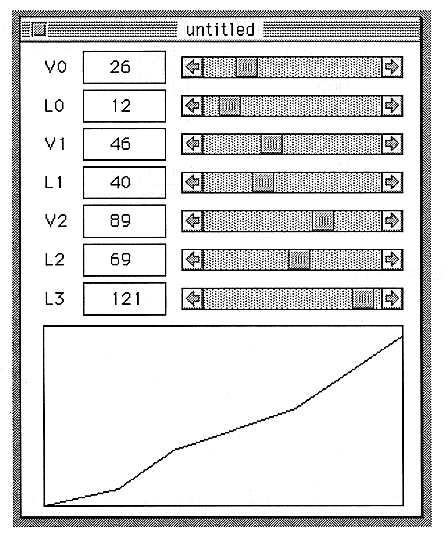

Return to previous page ｜ Return to menu ｜ Go to next page
-
First, double-click the name and give it a name.
Double-click number 0.

Set the L0, L1, L2, and L3 sliders to the far right.
Close the VelocityEdit window and the Velocity window because the screen becomes difficult to see.
Now display the TOTALLEVEL window again. The Velocity pop-up menu should change to your name. If you have created No.1 and No.2 in the Velocity window, select them from the pop-up menu.
6 Make a sound
Now, you should have a sound. Try to key-on a MIDI instrument connected to the SCSP board with program change number 0!
Return to previous page ｜ Return to menu ｜ Go to next page